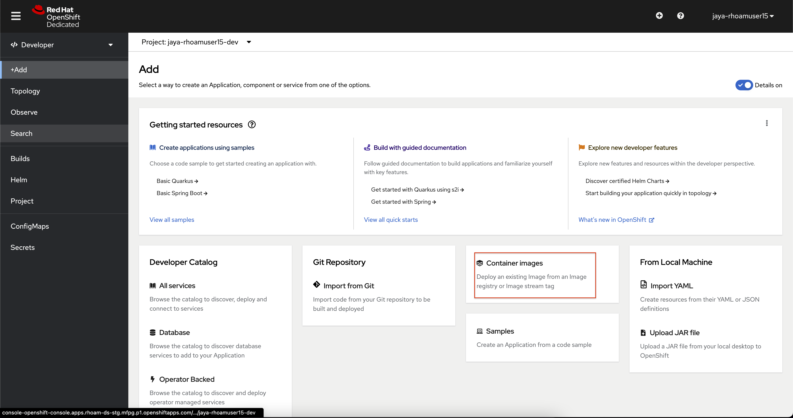
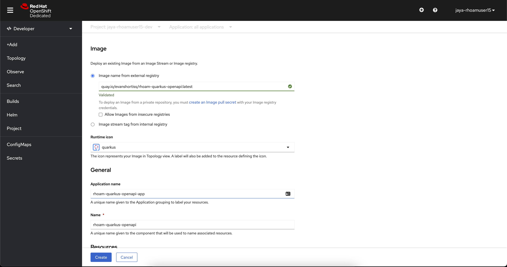
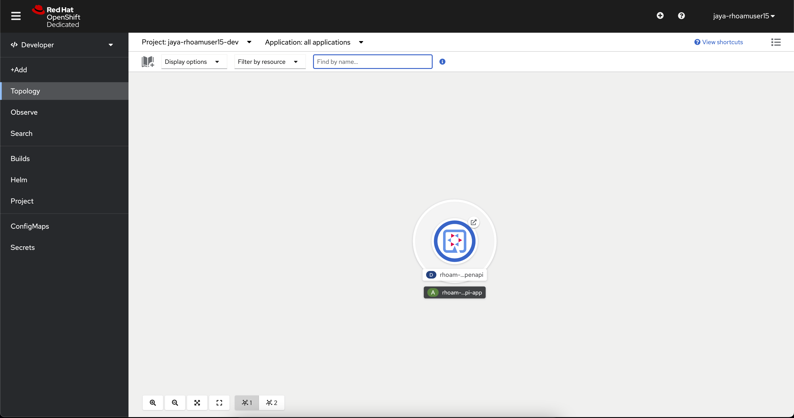
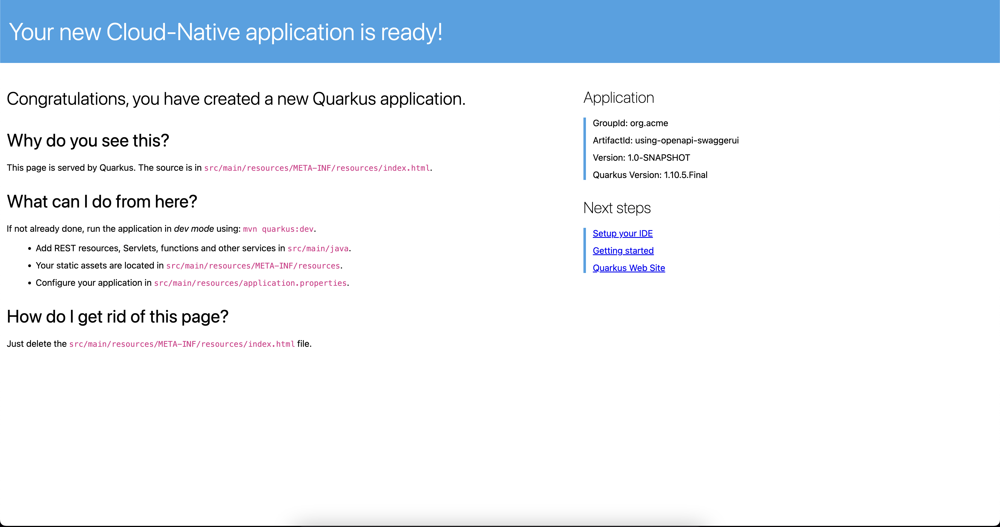
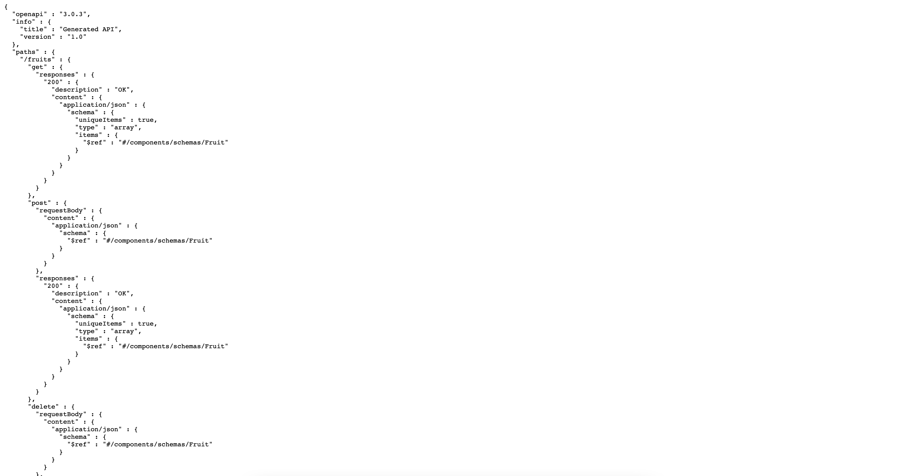
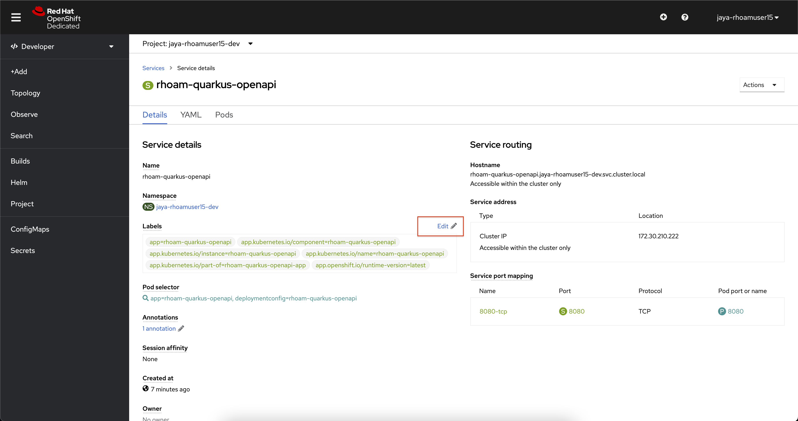
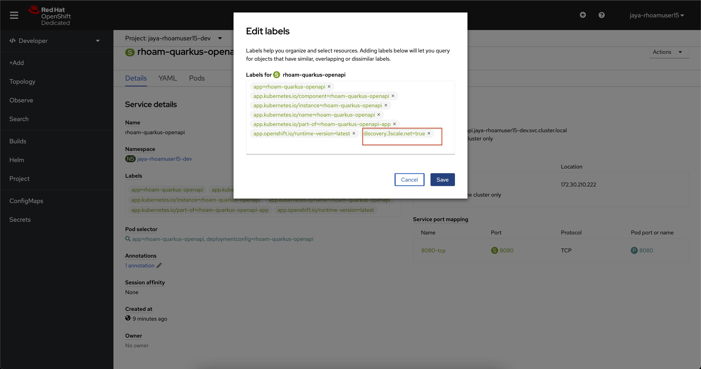
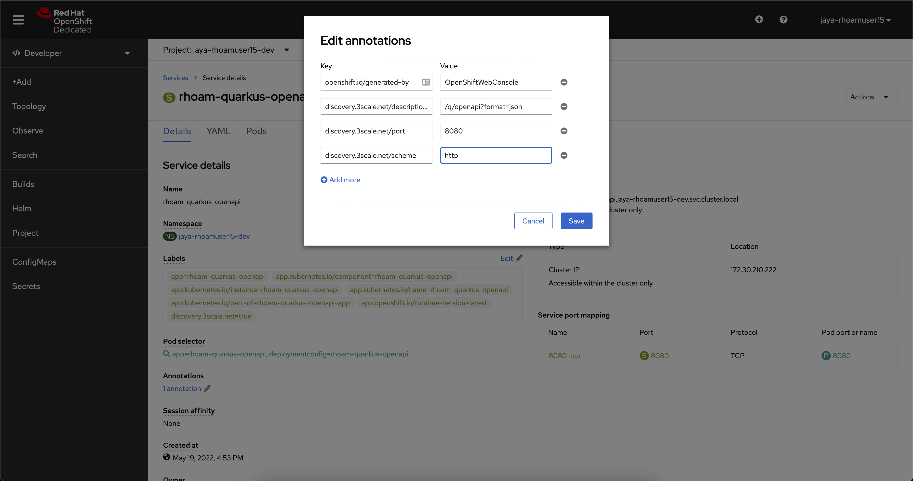

Deploy Service
Deploy a REST API and setup for discovery
In this section, you will deploy an existing Quarkus application container image and configure it to make it easily discoverable by OpenShift API Management.
Deploy a REST API
Now, let’s deploy an existing Quarkus application. The container image of this file is hosted on quay.io. Quay is a registry for storing and building container images as well as distributing other OCI artifacts. The service is free for those who want to set up their own public repositories and available for a fee if you want to create private repositories
-
Click on the perspective switcher at the top of the navigation of the OpenShift console, and select Developer if you aren’t already in that perspective.
-
You have two projects automatically created.
-
From the Project dropdown menu, ensure you are using
<username>-devproject -
In the navigation menu, click
+Add. -
On the +Add page, click the Container Image tile.
-
In the Image name from external registry field, enter:
quay.io/evanshortiss/rhoam-quarkus-openapi:latest -
Change the Runtime icon to Quarkus.
-
Check the Create a Route to the Application box under Advanced options.
-
At the end of the form, click Create.
 -
This will deploy the application and show the Topology view. The application is represented by the light grey area with a white border. The deployment is a white circle.
 -
Click the Open URL arrow icon on the deployment.
-
This opens a new browser window that displays the Quarkus application homepage.
 -
Append /q/openapi?format=json to the URL in the address bar to confirm you can access the OpenAPI Spec for the application. Ensure the URL is http and not https.

With this, you have successfully deployed this application on OpenShift.
Annotate the Quarkus application for Service Discovery
In this section, we will
-
Add metadata to the previously deployed Quarkus application to make it easily discoverable by OpenShift API Management.
|
Service Discovery is a 3scale feature that helps you import services from an OpenShift cluster. The Red Hat 3scale API Management instance provided by Red Hat OpenShift API Management has the Service Discovery feature enabled and pre-configured. |
-
Navigate to the Topology View.
-
Click the Quarkus Deployment that you created in the previous section. A panel will appear on the right.
-
Select the Resources tab in the panel.
-
Click rhoam-quarkus-openapi link under the Services heading to load the Service details screen.
 -
Use the Edit link beside the Labels heading to add a label with the key and value, and click on Save
discovery.3scale.net=true -
Scroll down and click the Annotations to open the Edit annotations dialog for the Service.
-
Use the Add more button to add the following key-value pairs:
KEY VALUE discovery.3scale.net/description-path
/q/openapi?format=json
discovery.3scale.net/port
8080
discovery.3scale.net/scheme
http
-
Click the Save button after you’ve added the three annotations.